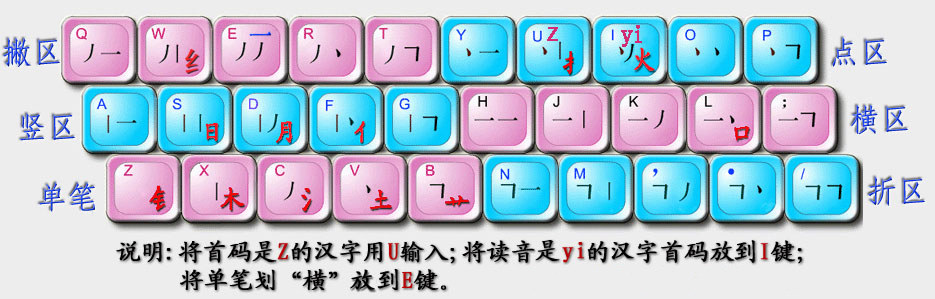
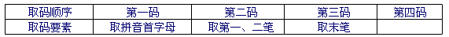
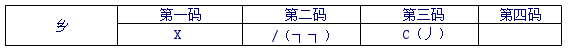
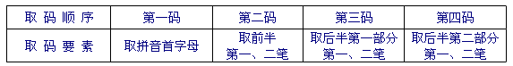
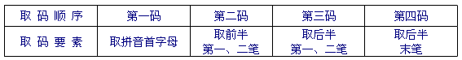

穿越中文输入法中文编码方法
Table of Contents
穿越中文输入法采用了优化的中文音形编码方式，也就是说，编码时，每个汉字最多取四个字母，首先取第一个声母，然后按照字形用基本笔画书写顺序进行简单拆分。汉字由“横、竖、撇、点、折”五种基本笔画组成，按照一定规律分布在30个键盘上，5个基本笔画对应5个键，每两个笔画对应一个键。另外，为了方便，单独设置了一些常用的字根。每个字词最多4个字母。
例如输入：你好，取“你”的前两个字母 nf ，取“好”的前两个字母 h, 。只要输入 nfh, 即可。
1 键盘布局
笔画和基本字根分为五个双笔画区和一个单笔画区共六个区。如下图所示：

将拼音首字母是 z 的汉字改为用 u 输入；将读音是 yi 的汉字首码移到i键；将单笔划“横”放到 e 键。
⑴ 五个双笔画区：横区、竖区、撇区、点区、折区。
由横笔开始的五种双笔画是： 一一、一丨、一丿、一丶、一┐，它们的第二笔分别是横、竖、撇、点、折，并按从左至右的顺序排列在横区。
由竖笔开头的五种双笔画是丨一、丨丨、丨丿、丨丶、丨┐，也按从左至右的顺序排列在竖区。其余各区，照此类推。
⑵ 一个单笔画区：一、丨、丿、丶、┐五种单笔画，除了将“一”放到E键外，其它的也按从左至右的顺序排列。注：提=横 捺=点 竖左钩=竖。
2 拆分规则
2.1 汉字基本组成 ：
⑴ 独体字：只有一个结构的字。如“雨、丁、州、肃”等字。
⑵ 合体字：可较为直观、合理地拆分为至少两个结构的字。如“进、催、资、圆、直、”等。因较难区分，既作合体字、又作独体字对待的有“头、斗、步、弟、兼、见、六、鼠、云、羊、象、免、兔、首、鬼、革、百、面、而、父、巨、臣、卤、囟、囱”等。含“人、口、木”等字根的独体字作为合体字对待的有“贝、页、亥、肉、石、言、术”等
⑶ 末笔取码：即将独体字的最末一笔作为取码对象。最末一笔分为“横、竖、撇、点（捺）、折”五种笔画。例如“东”的末笔是点、“州”的末笔是竖。
⑷ 全分阴阳：即将合体字直观、合理地拆分为阴阳两半，前半为阴、后半为阳；后半能再分的，可以再次拆分为阴阳两半。例如，“资”拆分为阴半为“次”、阳半为“贝”；“贝”又可再次拆分为阴半“冂”、阳半“人”。
2.2 取码要素
输入法用30个键符给汉字进行编码，即26个英文字母键和4个非字母符号键——逗号、句号、分号、斜杠，用其代表汉字首码、5种单笔画、25种双笔画和12个设定部首。
汉字首码：用其汉语拼音的首字母来表示。例如：“chi”里的“c”，“ao”里的“a”。
5种单笔画：横（一）、竖（丨）、撇（丿）、点（丶）、折（┐）五种基本笔画。
25种双笔画：横、竖、撇、点、折五种单笔画两两组合出25种双笔画。
12个偏旁部首（即字根）：在键盘上设置了12个使用频率高的偏旁部首，即“金（钅）、木、水（氵）、土、火、日（曰）、月、人（亻）、口、手（扌）、艹、纟”。打字时遇到这12个设定的部首则不能拆分。它的记忆口诀为：“金木水土草，日月人口手，火与纟”。但在这里要注意的是：当有笔画穿过这12个偏旁部首时，这些偏旁部首要按笔画进行拆分。如“教”字，本来它的部首“土”是独立的字根不能被拆分的，但是因为有一撇穿过“土”字，所以它要被拆分。
3 编码规则
将汉字按字形结构分为独体字和合体字；按编码的长度分为一码字（一级简码）、二码字（二级简码）、三码字（三级简码）和四码字（全码）。输入汉字时，第一码取汉字拼音首字母（有特殊规定的除外），从第二码起取笔画或字根的代码，最多取四码。取码时要先区分独体字和合体字。合体字拆分，大部分应遵循“从上、从左”原则，但也有例外：①拆分后还能成字的，从成字处拆分，如“烹、鲁”两字，正确的拆分是，烹＝亨＋灬，鲁＝鱼＋日；②有明显边界的字，不管其笔顺如何，从边界处拆分，如“区、式”两字，应拆分为：区＝匚+乂，式＝弋＋工。
3.1 ⑴ 一级简码
是指用一个字母表示的汉字，共有26个：
Q（起）W（为）E（而）R（人）T（他）Y（有）U（这）I（一）O（我）P（平）
A（啊）S（是）D（的）F（分）G（个）H（和）J（就）K（可）L（了）
Z（在）X（学）C（成）V（地）B（不）N（你）M（们）
3.2 ⑵ 独体字的输入
独体字最多取三码。为了规避重码，有时用逗号将其补足三码或四码。规则如下：

如：乡——首码是x，第二码是/，第三码是c，编码为x/c。注意：乡与纟不同。

3.3 ⑶ 合体字的输入
后半能再分的合体字：

如：撕SUJE=S（首音）＋U（扌）＋J（一丨）＋E（ノノ）
后半不能再分的合体字：

如：咱ULWZ=U（首音）＋L（口）＋W（ノ丨）＋E（一）
注意：
① 合体字首先拆分为构件，然后取各构件的笔画。
如：式S;JE=S（首音）＋;（弋）＋J（ㄒ）＋E（一）
② 合体字构件优先取整字，其次取普通结构。
如：幕MBGX=M（首音）＋B（艹）＋G（冂）＋E（丨）
③ 有明显界线的字视为合体字，并以该界线拆分结构。
如：丽LEGG=L（首音）＋E（一）＋G（冂）＋G（冂）
④ 有"冖"结构的合体字以此为分界线，且该结构不编码。
如：营YBLL=Y（首音）＋B（艹）＋L（口）＋L（口）
⑤ "亻"右边如有一短竖，以此为分界线，且该结构不编码。
如：修XFTE=X（首音）＋F（亻）＋T（夂）＋E（彡）
3.4 ⑷ “可、灭、后、司”的编码
因“可”字在写完第一笔后遇到字根，作为独体字对待，其编码分别被定义为“kex”。“后、司、灭”是合体字，“口、火”字以上的部分是前半，“口、火”是后半，其编码分别是“hel、snl、mei”。
3.5 ⑸ 词组输入
二字词：取每个字的前两码。
三字词：取第一字的前两个二码和最后两个字的第一码。
四字词：取每个字的第两码。
多字词：取前三字的第一码和最后一字的第一码（前三末一）。
注意：一码字是二字词或三字词的首字时，应取前两码。如：人民：RFMN（“人”字是一码字，但输入二字词时要取两码）。
3.6 ⑹ 全形输入
不会读的字可选择全形方式，方法是"o＋全形"。如: 瘿 oyg,
4 特殊处理
⑴ 单字“特三码”功能，也就是将e或逗号作为第三码，为某一汉字设置了一个容错的三级简码。“特三码”有近300个，如：“累lge、玉yhe、九jte、及jt,、四sg,、步ba,、倒dg,”等，这些编码比原正确编码好打了许多。
⑵ 单字“特二码”——一般是将某一汉字的第二码再设一个非正常编码，以大幅减少字词的重码，共40多个：当d, 更g, 称c, 程c, 重c, 说s, 岂q, 去q, 图t, 未w, 违w, 知z, 智z, 则z. 常c. 报b. 抱b. 勿w. 飞f. 又ya 慢ma 记ja 计ja 即ja 靠kd 海hd 能ne 长ee 老le 有ye 先xi 推tj 任rj 会hr 会kr 就jr 以ir 您nr 真ur 快kr 失sv 适sv 路lv做z, 则z.求qm 变bm。特二码参与词组的编码。
⑶ 词组“特四码”——即利用编码中用得较少的a键、分号键作为第四码，为部分词组设置的一个容错的编码。主要功能：①有重码的极常用的词，将与其重码的相对不常用的词设置成特四码，以保证极常用的词用正确编码打出时没有重码，直接上屏；②排在靠后的比较常用的重码词用特四码来表示，使其在无重码状下用特四码可以打出，直接上屏。规则是：当“特四码”词的第三码用右手击键时，第四码就为a，用左手击键时，第四码就为分号，以实现左右手交叉打字。如果编码a和;被占用，则利用“, . /”来进行编码。
⑷ 为了减轻右小指击键压力，第一、二码都用右手击键且第二码是“/”的字词，“/”可以用“z”代替。
⑸ 对单字有选择地采用了“出简不出全”的编码方案。“○”可以用zo打出。
⑹ 设置双声母两码词组70多个。如：人民rm、加快jk、安全aq、可以ki、但是ds等。
⑺ 巧妙利用码元逗号。因逗号总是排在所有同类编码的前面，一是利用逗号作为补码——不足三码、四码的可用逗号补足；二是将一些不常用的字，用逗号作为第四码，生成一个容错的编码。
⑻ 设置了可以两键或三键上屏的标点和符号。方法是：先打v键，再打a、b、c等键。注意：除了问号双击v键可以直接上屏外，引号、冒号、叹号、省略号、破折号等常用符号的第二码一律放到右手位。
⑼ 建议新手一周内不要用“特二码”、“特四码”打字，词组最好打全码，遇重码时输入下一编码，处在候选窗第一位的词会自动上屏。
5 词组输入
① 双字词：第一字前两码＋第二字前两码；
② 三字词：第一字前两码＋第二、三字第一码；
③ 四字及以上词：第一、二、三、末字第一码；
6 特殊符号
V键功能
V键下为符号。
7 独体字列表
A1 凹
B14 八巴白百办半贝本匕必丙秉卜不
C20 才册叉产长厂车臣承尺斥虫丑出川串垂匆囱寸
D10 大歹丹刀弟电刁丁东斗
E 4 儿而耳二
F 8 凡方飞丰夫弗甫父
G13 丐干甘戈革个更工弓瓜广鬼果
H6 亥禾乎互户火
J16 击及几己夹甲兼柬见巾斤井九久臼巨
K3 卡开口
L12 来乐里力立吏隶两了六龙卤
M13 马毛矛么门米面民皿末母木目
N7 乃内年鸟牛农女
P2 片平
Q9 七气千羌且丘求曲犬
R7 冉人王刃日肉人
S29 三山上少申身升生尸失十石史矢土氏世事手首书鼠术束甩水巳四肃
T7 太天田头凸土屯
W16 瓦丸万亡王为卫未文我乌无五午勿戊
X10 夕西习下乡象小心囟血
Y33 丫牙亚严言央羊夭也业页一衣夷乙已义亦永用尤由酉又于予与雨禹玉曰月云
Z16 再乍丈正之止中重舟州朱主爪专子自